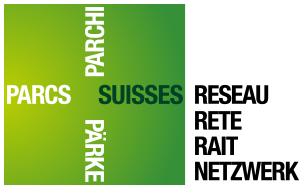

no two parks are alike...
Les parcs naturels régionaux de Suisse occidentale
- Veuillez sélectionner un parc -
Parc naturel régional Jura vaudois
Parc naturel régional Gruyère Pays-d'Enhaut
Naturpark Gantrisch
Parc naturel régional Chasseral
Parc naturel du Jorat
Parc naturel régional du Haut-Jura
Naturpark Diemtigtal
Landschaftspark Binntal
Parc du Doubs
Parc naturel régional Vallée du Trient
2024 © SADOU Abdelmadjid UNIL